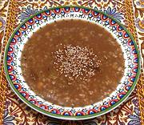

|
Wheat & Grape Molasses SoupTurkey - Dims Çorbasi / Üzüm Pekmezi Çorbasi | ||||
| Makes: Effort: Sched: DoAhead: |
9 cups ** 9-1/2 hrs Yes |
Your first taste of this soup will be a surprise, as the spicing will seem unusual to most - but you will very quickly get accustomed to it. | |||
|
|
1 2-1/2 2/3 1/4 ------- 1 1/2 1 1 ------- 1/4 4 1/4 ------- 2 |
c c c c --- t t t t --- c c c --- T |
Crushed Wheat (1) Water Chick Peas (canned) Sultanas (2) -- Spices Cloves Cinnamon Allspice Salt ---------- Butter Water Grape Molasses (3) -- Garnish Sesame, toasted (4) |
This is a substantial soup with plenty of flavor, so it's more a main dish soup or lunch soup than a soup course soup. Do-Ahead: - (8 hrs - 5 min work exclusive of making broth)
|
tog_whtgrpl 190602 tcmd26 - www.clovegarden.com
©Andrew Grygus - agryg@clovegarden.com - Linking to
and non-commercial use of this page is permitted.